Wstęp
Tym razem przygotujemy grę, w której będziesz musiał w określonym czasie złapać jak najwięcej owoców. Za każdy owoc otrzymasz punkt. Jeśli nie uda Ci się złapać któregoś z nich, stracisz kilka punktów. Przy okazji nauczymy się klonować duszki!
Krok 1: Przygotuj scenę, duszki i zmienne
Zadania do wykonania
-
Utwórz nowy projekt i nazwij go "Złap mnie jeśli potrafisz"
-
Dodaj tło dla gry. Z biblioteki teł wybierz grafikę z pustynią, będzie idealna dla naszego projektu.
-
Czas dodać duszki. Będą nam potrzebne dwa duszki. Jeden to owoc - wybierz duszka pomarańczy z biblioteki. Drugim duszkiem Ty będziesz sterował, wybierz np. dinozaura.
-
Twoja scena i duszki powinny wyglądać w ten sposób:
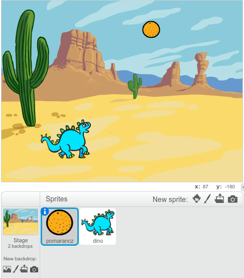
-
Twój duszek, Dinozaur, będzie poruszał się w lewo i w prawo. Przygotuj dla niego drugi kostium:
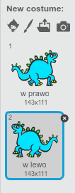
-
Będziemy potrzebować trzech zmiennych: imię, czas, punkty. Dodaj takie zmienne. Ustaw je na scenie. Dla zmiennej "imię" i "punkty" zmień sposób prezentacji tak, żeby nie było widać ich nazw, jedynie wartości:
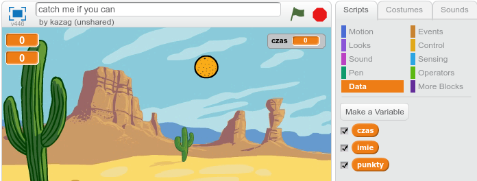
Zapisz swój projekt
Krok 2: Owoce!
Zadania do wykonania
-
Grę rozpocznie kliknięcie w zieloną flagę. Wtedy gra powinna zapytać Ciebie o imię, ustawić zmienne na odpowiednie wartości początkowe i nadać komunikat o starcie, żeby inne duszki wiedziały, że gra się rozpoczęła.
Dodaj następujący kod dla pomarańczy. Sprawdź, czy kod działa:
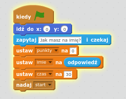
-
Dobrze, teraz pomarańcza powinna wybrać losowe miejsce na górze ekranu i zacząć spadać, prawda? Pomarańcza musi wykonać to wiele razy. Do takich zadań idealnie nadają się klony. Każdy klon pomarańczy będzie działał niezależnie od innych. Musimy więc sprawić, żeby pomarańcza klonowała siebie co jakiś czas:
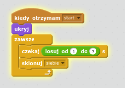
-
Teraz trudniejsza część! Każdy klon powinien wybrac losowe miejsce na górze ekranu, pokazać się, rozpocząć ruch w dół i jeśli doleci do dołu, wtedy gracz powinien stracić jeden punkt. Jeśli natomiast owoc dotknie Dinozaura, klon powinien znikać. Możemy to zrobić w ten sposób:
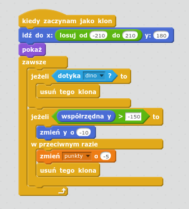
-
Sprawdź swój kod. Czy pomarańcza zachowuje się we właściwy sposób? Czy co jakiś czas nowy owoc zaczyna spadać w dół planszy? Czy tracisz punktu, kiedy jest on odpowiednio nisko?
Zapisz swój projekt
Krok 3: Dinozaur!
Zadania do wykonania
-
Owoce spadają, ale nie mamy jeszcze kodu dla Dinozaura. Na początek musimy sprawić, żeby Dinozaur zniknął po kliknięciu w zieloną flagę. W międzyczasie może on wybrać dla siebie pozycję startową. Następnie, kiedy otrzymamy komunikat o rozpoczęciu gry, dodamy obsługę sterowania dla Dinozaura. Będzie ona bardzo prosta. Jeśli klikniesz strzałkę w prawo, Dinozaur obróci się w prawo i przesunie o kilka kroków. Jeśli naciśniesz strzałkę w lewo, Dinozaur zacznie poruszać się w lewo. Jego kod powinien wyglądać następująco:
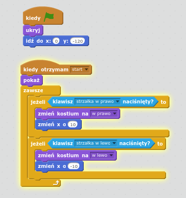
-
Została jeszcze drobna sprawa - Twój Dinozaur nie potrafi zdobywać punktów... Dodajmy więc odpowiedni kod, dzięki któremu po zetknieciu z pomarańczą Dinozaur z zadowoleniem powie "Mniam!" i zwiększymy zmienną z punktami o jeden:
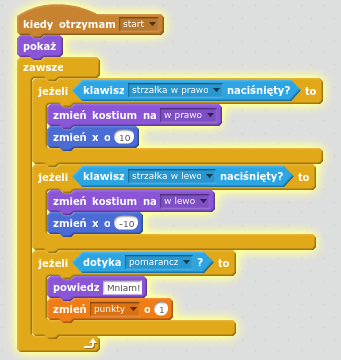
Zapisz swój projekt
Krok 4: Koniec gry
Zadania do wykonania
-
Koniec gry powinien nastąpić wtedy, kiedy skończy się czas. Obecnie jednak nic takiego się nie dzieje. Musimy więc dodać skrypty dla sceny:
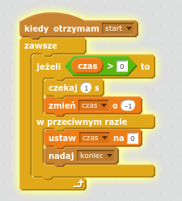
Dzięki temu, kiedy gra się rozpocznie, scena co sekundę zmniejszy wartość zmiennej "czas", a kiedy już "czas" będzie wynosił "0" scena nada komunikat o zakończeniu gry.
-
Na taki komunikat Twoje duszki powinny zakończyć swoje działanie. Musisz zaprogramować to w ten sposób:
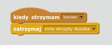
Taki kod należy dodać dla pomarańczy i Dinozaura.
-
Ok, ale co z wynikiem? Gra powinna powiedzieć graczowi, ile punktów zdobył. Niech zrobi to Dinozaur. Wykorzystaj w tym celu komunikat o zakończeniu gry i możliwość łączenia tekstu.
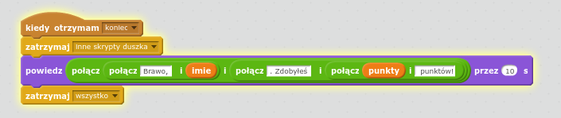
Zapisz swój projekt
Zadania dodatkowe
-
Dodaj dźwięki do Twojej gry! Spróbuj dodać podkład muzyczny oraz dźwięk łapania owocu i dźwięk, który wybrzmi, kiedy stracisz punkty.
-
Potrafisz sprawić, żeby za każdym razem owoc zmierzał w nieco innym kierunku, niż pionowo w dół? Spróbuj losować kierunek przed rozpoczęciem ruchu klona.
-
Wiesz, że możesz również zmieniać spadające owoce? Dodaj odpowiednie kostiumy dla Twojej pomarańczy i losuj jeden z nich zanim pokażesz klona.